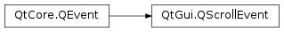

QScrollEvent¶
Synopsis¶
Functions¶
- def
contentPos() - def
overshootDistance() - def
scrollState()
Detailed Description¶
The
PySide2.QtGui.QScrollEventclass is sent when scrolling.The scroll event is sent to indicate that the receiver should be scrolled. Usually the receiver should be something visual like
PySide2.QtWidgets.QWidgetorPySide2.QtWidgets.QGraphicsObject.Some care should be taken that no conflicting QScrollEvents are sent from two sources. Using
QScroller.scrollTois save however.See also
PySide2.QtGui.QScrollPrepareEventPySide2.QtWidgets.QScroller
-
class
PySide2.QtGui.QScrollEvent(contentPos, overshoot, scrollState)¶ Parameters: - scrollState –
PySide2.QtGui.QScrollEvent.ScrollState - overshoot –
PySide2.QtCore.QPointF - contentPos –
PySide2.QtCore.QPointF
Creates a new
PySide2.QtGui.QScrollEventcontentPosis the new content position,overshootDistanceis the new overshoot distance whilescrollStateindicates if this scroll event is the first one, the last one or some event in between.- scrollState –
-
PySide2.QtGui.QScrollEvent.ScrollState¶ This enum describes the states a scroll event can have.
Constant Description QScrollEvent.ScrollStarted Set for the first scroll event of a scroll activity. QScrollEvent.ScrollUpdated Set for all but the first and the last scroll event of a scroll activity. QScrollEvent.ScrollFinished Set for the last scroll event of a scroll activity. See also
-
PySide2.QtGui.QScrollEvent.contentPos()¶ Return type: PySide2.QtCore.QPointFReturns the new scroll position.
-
PySide2.QtGui.QScrollEvent.overshootDistance()¶ Return type: PySide2.QtCore.QPointFReturns the new overshoot distance. See
PySide2.QtWidgets.QScrollerfor an explanation of the term overshoot.See also
PySide2.QtWidgets.QScroller
-
PySide2.QtGui.QScrollEvent.scrollState()¶ Return type: PySide2.QtGui.QScrollEvent.ScrollStateReturns the current scroll state as a combination of ScrollStateFlag values.
ScrollStarted(orScrollFinished) will be set, if this scroll event is the first (or last) event in a scrolling activity. Please note that both values can be set at the same time, if the activity consists of a singlePySide2.QtGui.QScrollEvent. All other scroll events in between will have their state set toScrollUpdated.A widget could for example revert selections when scrolling is started and stopped.
© 2018 The Qt Company Ltd. Documentation contributions included herein are the copyrights of their respective owners. The documentation provided herein is licensed under the terms of the GNU Free Documentation License version 1.3 as published by the Free Software Foundation. Qt and respective logos are trademarks of The Qt Company Ltd. in Finland and/or other countries worldwide. All other trademarks are property of their respective owners.